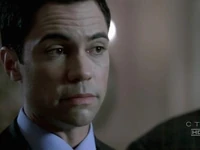
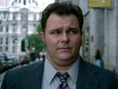
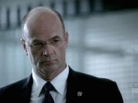

Lillian “Lilly” Rush is the main character of Cold Case, portrayed by Kathryn Morris. She
is Philadelphia’s first female homicide detective specializing in solving cold cases
alongside her partner, Scotty Valens. Lilly is deeply dedicated to justice, believing
that all victims deserve to be remembered.
Raised in poverty by an alcoholic mother, Lilly had a traumatic childhood. Her father
abandoned the family, and she suffered a violent attack as a child. These experiences
left her with significant trust issues, affecting her relationships, particularly with
men. Her relationship with her sister, Christina, is strained due to past betrayals, and
she has a complicated dynamic with her absentee father, whom she reconnects with later
in life.
At work, Lilly is highly skilled, known for her interrogations and relentless pursuit of
justice. She has a close, almost familial bond with her boss, John Stillman, and a deep
trust in Scotty Valens, despite past conflicts. Throughout the series, she survives
multiple life-threatening incidents, including being shot and nearly drowning.
Despite facing personal and professional challenges, Lilly remains committed to her work.
By the end of the series, she is offered a job with the FBI, leaving her future
uncertain.
Scotty Valens

Scotty Valens is a Philadelphia homicide detective who joined in 2003 as Lilly Rush’s
partner. Initially cocky, he quickly earned his squad’s respect despite a turbulent
personal life. Born in the 1970s to Cuban immigrants, he idolized his older brother,
Mike, and secretly witnessed his abuse by a boxing coach. His career began in undercover
work, where he developed feelings for Ana Castilla, a woman trapped in the drug trade,
but she was murdered.
Scotty’s relationships were complicated. He stayed with his schizophrenic childhood
sweetheart, Elisa, out of guilt, but after her suicide, he was haunted by the belief she
was murdered. He later dated Christina Rush, ADA Alexandra Thomas, and lab technician
Frankie Rafferty, but all relationships ended due to betrayal, guilt, or professional
conflicts. His rebellious streak often put him at odds with authority, notably when he
saved Lilly from a hostage situation, leading to a suspension. He later confronted his
past, helping his brother testify against their childhood abuser and seeking justice for
his mother after she was assaulted. Despite personal struggles, Scotty remained a
passionate and dedicated detective, driven by loyalty and a deep sense of justice.
Kat Miller
Kat Miller joined the Philadelphia Homicide Squad in 2005 after working undercover in
Narcotics. She has a daughter, Veronica, from a past encounter with gang member Jarrod
Jones. A haunting case from 2002, where a teen died in her arms, was solved years later.
She was once shot in the line of duty and later transferred to Homicide after impressing
Lieutenant Stillman. In 2009, she briefly dated ADA Curtis Bell, but their relationship
ended when she resisted Jarrod’s bid for joint custody. By 2010, she allowed Jarrod
visitation, and her relationship with Curtis hinted at a possible reconciliation.
Nick Vera

Detective Nick Vera is a tough but skilled investigator in the Philadelphia Homicide
unit. Born in the late 1960s, he learned some Russian from his grandfather and played
hockey in high school. He joined the police force in 1989 and helped a Russian family
seeking asylum, later attending the funeral of one of them after her murder. By 1998, he
had become a detective, working a series of rape cases, including the murder of Gail
Chimayo. His aggressive pursuit of a suspect led to frustration when the case remained
unsolved, leaving a lasting impact on him.
John Stillman

Lieutenant John Stillman leads the Philadelphia cold case squad with a stern but caring
approach. A Vietnam veteran, he carries war-era stress and personal struggles, including
his daughter Janie’s assault and his failed marriage, strained by his dedication to the
job. He once had an affair with Diane Yates and has a brother who is a Catholic priest.
After taking an unpaid leave to protect a colleague, he briefly retired but later
returned to duty. In season 7, he clashed with Patrick Doherty, who resented him for
imprisoning his son and exposing corruption.
Will Jeffries
Detective Will Jeffries was the most senior member of Philadelphia’s Homicide unit, known
for his dedication to justice, particularly in cases affecting the Black community.
Raised in a troubled home, he was mentored by a store owner who set him on the right
path. A former football player, his career ended due to injury, and he later served in
Vietnam. Jeffries lost his wife, Mary, in a hit-and-run in 1995, an event that shaped
his commitment to road safety and justice. His deep sense of duty sometimes led to
conflicts, including punching an ADA over a wrongful conviction. Though respected and
serious about his work, he remained shy in his personal life, unwilling to move on from
his late wife despite encouragement from colleagues.
Chris Lassing
Chris Lassing, nicknamed “Lass” by Lilly Rush, was her partner until 2003. While a
competent and hardworking detective, he didn’t share her passion for cold cases. A
smoker, Lassing struggled with the long hours of the job and later transferred out of
the Homicide unit due to diabetes. He was replaced by Scotty Valens.